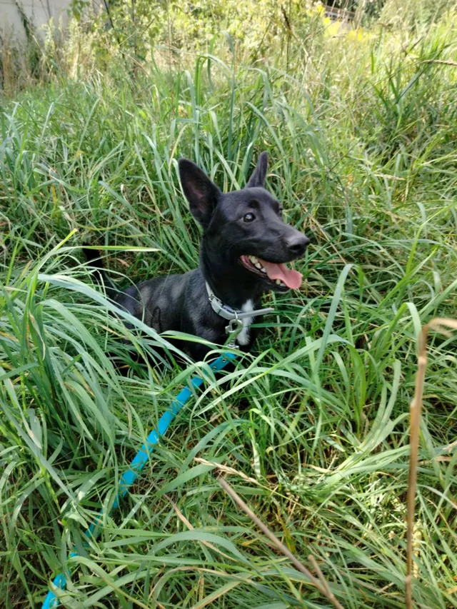
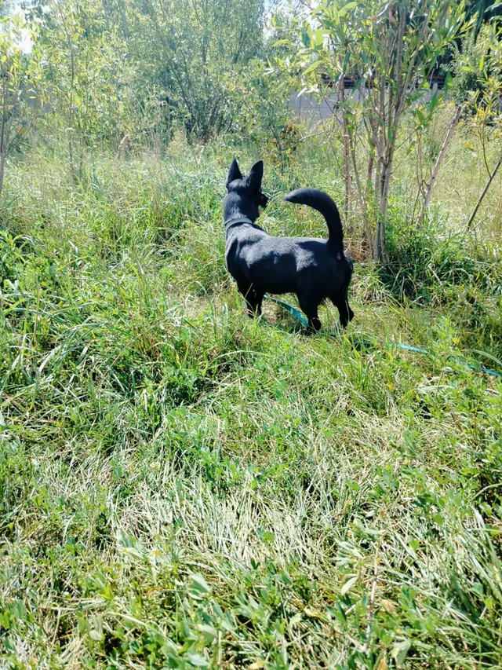
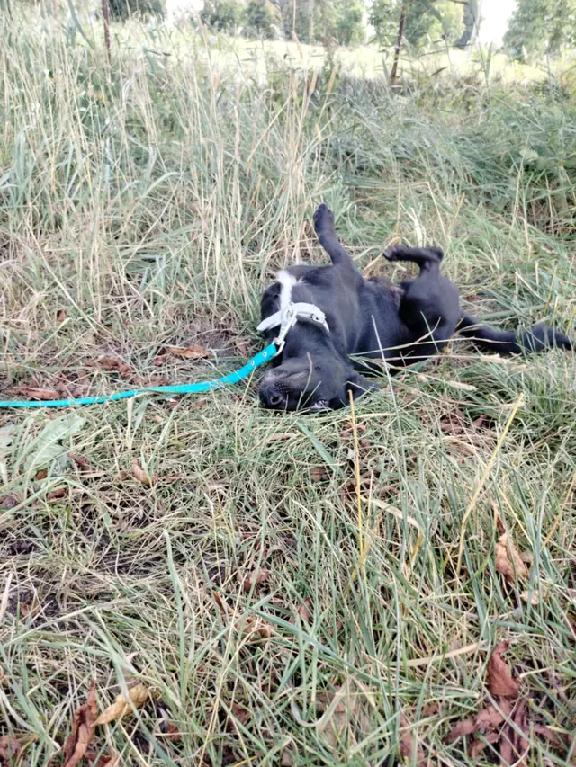

Hugo
samiec · młody · ok. 9 kg
Młody, niewielki psiak o kruczoczarnej maści. Zwinny, szybki i ciekawy świata - wszędzie musi zajrzeć.
Więcej o Hugo
Nie jest zbyt wylewny, ale lubi głaskanie i tarzanie się w trawie.
Mimo niewielkich rozmiarów ma temperament, dlatego polecamy go aktywnej rodzinie i do starszych dzieci.
W boksie mieszka ze starszym od siebie Rogerem i świetnie się dogadują, więc psi rezydent mile widziany. Stosunku do kotów nie znamy.
Pochodzenie: Ciechanów. W schronisku od 06.08.2025